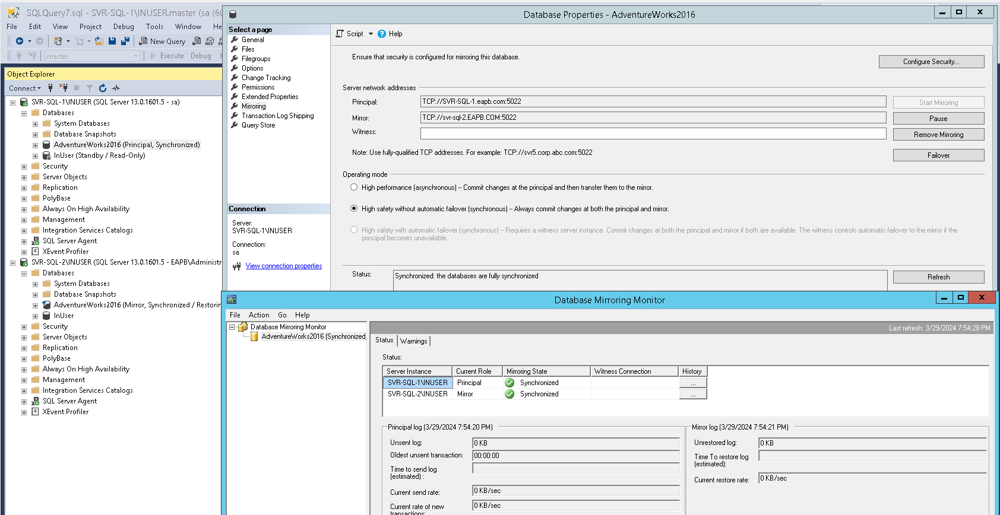

Overview
- A DR and HA technique that allows you to have a second server to be a "hot" stand-by copy of the main server, ready to take over any moment the main server fails.
- One SQL Server instance acts as a primary instance called the principal, while the other is a mirrored instance called the mirror.
- In special cases, there can be a third SQL Server instance that acts as a witness.
- A common mirroring configuration is the environment with two database servers with one instance each and a database that will be mirrored. solution has a major flaw because if the server goes down, both instances will be unavailable.
- Different SQL Server versions can be combined, but it’s not recommended.
- System databases can’t be mirrored.
Advantages
- A built-in SQL Server feature.
- Relatively easy to set up.
- Can provide automatic failover in high safety mode, etc.
- Can be combined with other DR options such as clustering, log shipping, and replication.
Disadvantage
- Will be removed from SQL Server in future versions in favor of AlwaysOn Availability Groups.
- It is per database only solution, which means that logins and jobs from the principal SQL Server must be manually recreated on the mirror.
- There is also possibility for delay, which can only be reduced with better hardware.
Operating Modes
- High safety
- Data is written and must be committed synchronously both on the principal and mirror databases. Only after committing on both databases, the application can continue running.
- Might produce latency and slower operation because transactions must be committed on both databases.
- If the principal database goes down, two options are available:
- Do nothing – Wait for the principal to become available again. During that time, the SQL Server instance is unavailable. Mirroring will continue where it has stopped.
- Force the SQL Server instance on the mirror database – The mirror database becomes the principal. Possible data loss due to committed transactions on the original principal database which are not yet committed on the mirror currently acting as the principal.
- High safety with automatic failover
- Same as High Safety mode (first two bullets).
- Three servers are necessary (with Witness server).
- If the principal database goes down, let the automatic failover process complete, the mirrored database becomes the principal.
- High performance
- The asynchronous communication, data is written and committed on the principal server, and later sent and committed to the mirror server.
- Automatic failover isn’t possible and the witness server can’t be used.
- Only available in the Enterprise edition of SQL Server.
- If the principal database goes down, three options are available:
- Same as High Safety mode (first two items).
- Manual update – To reduce data loss, take the tail of the log backup if the failed server allows, remove mirroring and restore the tail of the log on the previously mirrored database.
Configuration
Validations on both servers
- Same system collation settings.
- Same Local Windows groups and SQL Server logins.
- Same installed External software components.
- Same SQL Server software version.
- Same Global assemblies deployment.
- Matched certificates and keys used to access external resources, authentication and encryption.
Configuration
- On both nodes, pause all automated backup jobs.
- On the principal, perform one full backup and one transaction log backup.
- On the mirror, restore the database with NO RECOVERY option.
- On the principal, right-click on the database and choose Properties. On the Mirroring section, choose Configure Security.
- Include Witness Server - If you will specify a witness, specify it after the wizard, for easier troubleshooting.
- Choose Servers to Configure - Choose where to save the security configuration.
- Principal Server Instance - Specify information about the server instance where the database was originally located.
- Mirror Server Instance - Specify information about the server instance where the mirror copy of the database will be located.
- Witness Server Instance - Specify the server instance that monitors the status of the principal and mirror server instances.
- Service Accounts - Specify the service accounts of the server instances.
- Finish the wizard.
- If you encounter an error due to "..middle of restore..", try this.
- Check database mirroring if healthy.
- Add Witness server, if applicable:
- Select the operating mode, either high safety or high performance. If the witness server is specified choosing high safety mode will result in high safety with automatic failover.
- On both nodes, resume the log backup jobs.
BACKUP DATABASE <dbname> TO DISK = N'D:\full.bak' WITH NOFORMAT, NOINIT, NAME = N'Full Database Backup Full', SKIP, NOREWIND, NOUNLOAD, COMPRESSION, STATS = 10, CHECKSUM GO BACKUP LOG <dbname> TO DISK = N'D:\log.trn' WITH NOFORMAT, NOINIT, NAME = N'Database Backup Log', SKIP, NOREWIND, NOUNLOAD, COMPRESSION, STATS = 10, CHECKSUM
USE master GO ALTER DATABASE <dbname> SET SINGLE_USER WITH ROLLBACK IMMEDIATE GO BACKUP LOG <dbname> TO DISK = N'D:\full.bak' WITH NOFORMAT, NOINIT, NAME = N'Database Backup Log Tail', NOSKIP, NOREWIND, NOUNLOAD, NORECOVERY, STATS = 5 GO RESTORE DATABASE <dbname> FROM DISK = N'D:\full.bak' WITH FILE = 1, NORECOVERY, NOUNLOAD, REPLACE, STATS = 5 GO RESTORE LOG <dbname> FROM DISK = N'D:\log.trn' WITH FILE = 1, NORECOVERY, NOUNLOAD, STATS = 5
ALTER DATABASE <dbname> SET WITNESS = 'TCP://<server>:1433'

Troubleshooting
- Disconnected (try one at a time)
- Restart endpoint on both sides. (get the dynamic script from NICE's laptop)
ALTER ENDPOINT db_name STATE=STOPPED; ALTER ENDPOINT db_name STATE=STARTED;
ALTER DATABASE db_name SET PARTNER RESUME;
Solution: Mirrored database was not restored with NO RECOVERY. Restore it again using NO RECOVERY option.
Solution: Issue with SSMS 2016 (or other versions somewhere near it). Use below script:
-- run on mirror server
USE [master];
ALTER DATABASE AdventureWorksLT2017_2 -- replace database name
SET PARTNER = 'TCP://SQL-REPLICATION.EAPB.COM:5022' -- replace to primary server with domain and correct port
GO
-- run on principal
USE [master];
ALTER DATABASE AdventureWorksLT2017_2
SET PARTNER = 'TCP://SQL-SUBSCRIBER.EAPB.COM:5022' -- replace to mirror server with domain and correct port
GO
-- verify status
SELECT mirroring_state_desc
FROM sys.database_mirroring
WHERE database_id = DB_ID('AdventureWorksLT2017_2')
Scenario:
- Systems Team needed to perform a OS upgrade on a server which has a Database Mirroring setup to another server.
- Systems performed snapshot prior to upgrade then DBA stopped SQL Server services. Snapshot needs to be performed first due to snapshot needs to be performed and done prior to maintenance window and SQL Server services needs to be stopped once maintenance window starts.
- Upgrade failed and needed to roll back from snapshot.
- SQL Server Agent keeps getting stopped. It turns out that there had been a discrepancy between the LSN of Principal and Mirror database causing the database corruption.
- Solution was to rebuild the Database Mirroring setup. T-SQL is recommended to be used instead of GUI since some version of SSMS causes bug on the setup.
Errors in Event Viewer:
- SQL Server is terminating in response to a 'stop' request from Service Control Manager.
- An error occurred while processing the log for database. If possible, restore from backup. If a backup is not available, it might be necessary to rebuild the log.